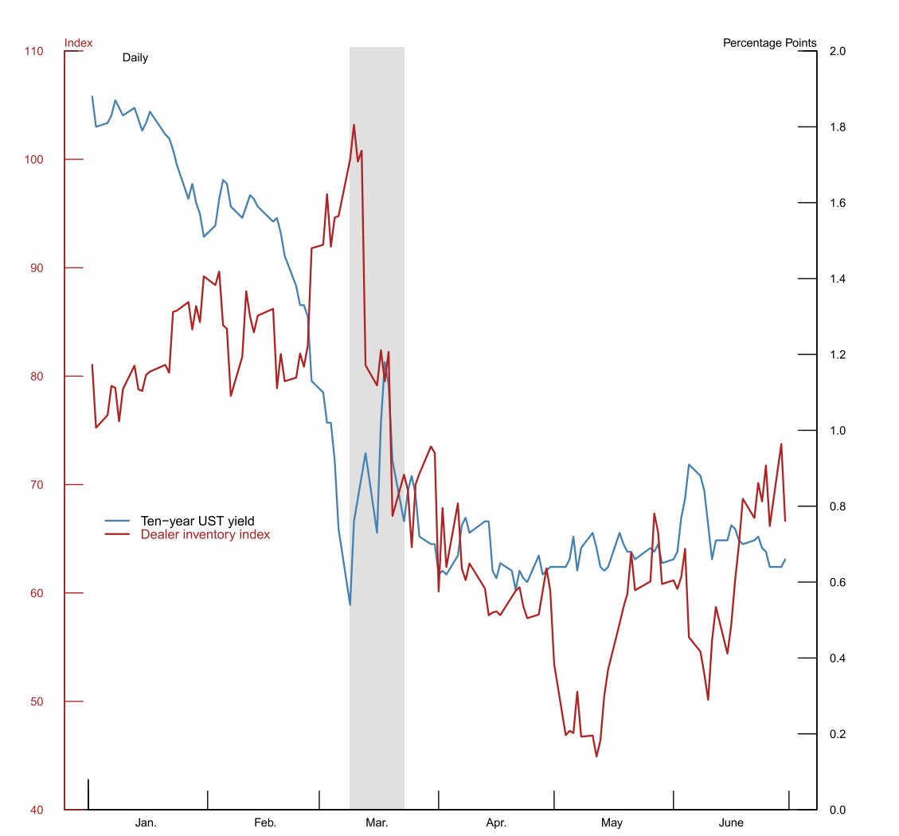
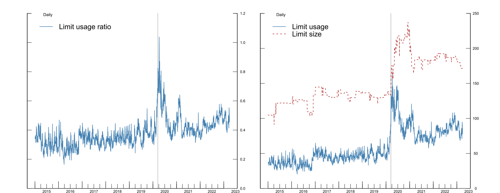
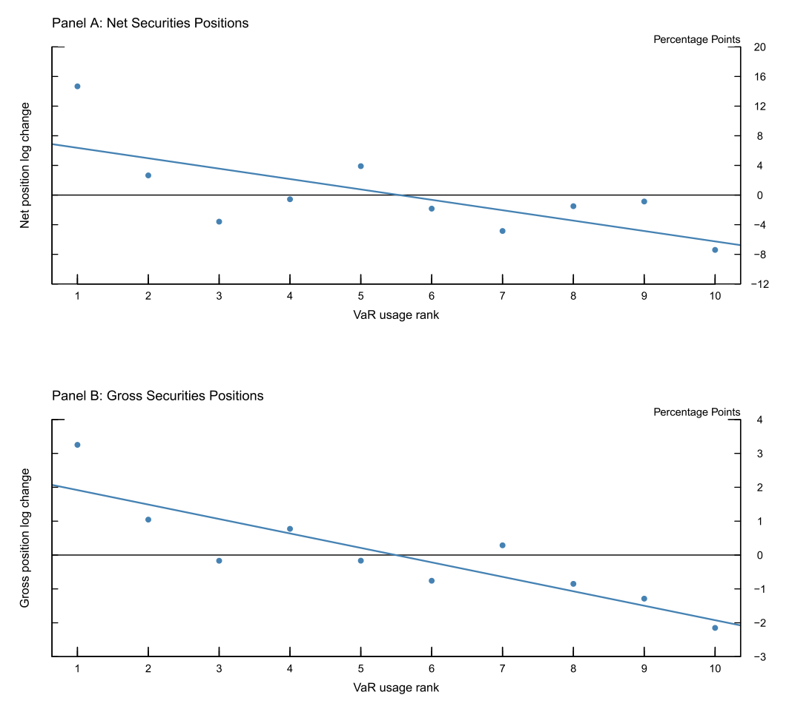
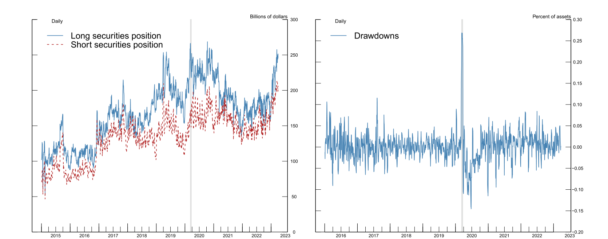
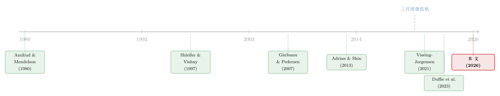

无风险市场里的风险厌恶：是谁给做市商系上了「风险限额」这根绳
本文读的是 Li, Petrasek & Tian (2026, Journal of Financial Economics)：美国国债被公认为最安全、最具流动性的资产，可 2020 年 3 月做市商却纷纷收手、连「最无风险」的国债也不愿接。作者用监管层独有的交易台级数据指出，真正的绳索不是 Volcker 规则、也不是补充杠杆率（SLR），而是各家银行给自己交易台设的内部 VaR 限额——当交易台逼近这条线时，名义上风险中性的做市商，行为上变得像一个厌恶风险的人：减仓、抬高风险报酬、把流动性收回去。这为「波动率—流动性」之间那条幽暗的负相关，提供了一个微观地基。
1 引言：一个「无风险」市场里的反常一幕
先讲一个画面。
2020 年 3 月，新冠疫情席卷全球，海外央行和共同基金为了抢现金，开始抛售它们手里最不该抛的东西——美国国债。按照教科书，这时该轮到做市商（dealer）登场了：他们的天职就是「逆势而为」（lean against the wind），在别人恐慌抛售时接货、在别人疯抢时供货，用自己的资产负债表去吸收这种一边倒的卖压。可现实是，连那批被官方指定的一级交易商（primary dealers）都不愿意接盘。更刺眼的是：在那两周里，国债收益率在往上走（价格在跌），做市商却反过来减持国债——他们不是在接货，而是在加入抛售的队伍，亲手把卖压推得更大。
如下图所示，做市商的国债库存指数在 3 月那段被阴影标出的「应激期」里一路下行，与此同时 10 年期国债收益率却在攀升。本该承接卖压的人，自己也在卖。

Figure 1: Dealer inventory index and 10-year Treasury yield
这就奇怪了。国债是公认的「避险天堂」、流动性的标杆，怎么偏偏在最需要流动性的时候，连它的专职做市商都临阵脱逃？这正是全文要回答的核心问题：
在一个「无风险」的市场里，做市商为什么会表现得如此「厌恶风险」？
2 旧答案为什么不够：Volcker 与 SLR
一个流行的解释把矛头指向了金融危机后的银行监管，尤其是 Volcker 规则（Volcker rule）和补充杠杆率（supplementary leverage ratio, SLR）。这条思路本身有文献支撑——Bao, O'Hara & Zhou (2018) 就发现，受 Volcker 规则约束的做市商在压力期收缩了公司债做市。
但作者很快指出这里的两处不合榫。
首先，Volcker 规则明确豁免了美国国债及其做市活动。拿一条对国债不生效的规则去解释国债市场的失灵，逻辑上就先漏了一截。
接着，一个自然的问题是：那 SLR 呢？SLR 确实可能拖累国债中介，因为它「风险盲」（risk-blind），把国债和高风险资产一视同仁地塞进分母（Duffie, 2018）。可 SLR 有两个致命的「慢」：它按季度均值计入表内敞口，临时性的库存上升很难立刻把这条线顶满；它对市场波动率的骤升也不敏感。而 2020 年 3 月波动率是井喷式的。再加上当时银行在 SLR 下其实还有不少余地（headroom）。Vissing-Jorgensen (2021) 的高频证据更直接：3 月国债价格压力的逆转，紧跟着美联储 3 月 19 日开始的大规模每日购债，而这比豁免国债与准备金计入 SLR 的临时监管放松，要早了好几周。
然后是更耐人寻味的一点：做市商在危机中「不愿担风险」的毛病，早于现代监管存在。Duffie (2023) 回忆，将近一个世纪前的 1939 年 9 月，二战爆发引发国债抛售潮，做市商同样接不住，逼得美联储下场大举买入。Fleckenstein & Longstaff (2020) 用衍生品相对标的的错价衡量中介的资产负债表成本，发现这种成本在 2007 年前后量级相当，于是他们说：要完整解释错价，「我们必须考虑后危机资本监管之外的其他因素」。
监管解释不了的那部分，到底是什么？
3 一个对偶：风险中性的交易员，为什么「看起来」厌恶风险
但真正关键的一步，是作者把问题从「监管」拉回到了「公司治理」——拉回到银行内部，给自己交易台设定的那条风险限额上。
经典的市场微观结构往往把做市商建模成风险中性（risk-neutral）的。可作者论证：哪怕一个交易员真的风险中性，只要他头上压着一条在险价值限额（value-at-risk limit, VaR limit），他的最优行为就会和一个具备常绝对风险厌恶（constant absolute risk aversion, CARA）效用的厌恶风险者观测上完全等价（observationally equivalent）。
这是全文的理论心脏，作者用一个两期模型把它讲清楚了。
原问题（primal）：一个 CARA 厌恶风险者。 设下一期财富为 \(W\)，效用为
$$U(W) = -e^{-\gamma W},$$
其中 \(\gamma\) 是风险厌恶系数。在 \(W\) 服从正态分布时，最大化它等价于经典的均值—方差优化：
$$\text{Maximize}\quad U = E[W] - \frac{\gamma}{2}\,\sigma^2(W),\tag{1}$$
这里 \(\sigma^2\) 是组合方差。直觉很朴素：他要期望财富高，又要方差小，两者用 \(\gamma\) 来权衡。
对偶问题（dual）：一个风险中性、但被 VaR 限额拴住的交易员。 他不在乎方差，只想最大化期望财富，但不能越过那条限额：
$$\text{Maximize}\quad E[W]\quad \text{s.t.}\quad \text{VaR}_\alpha(W) \le \overline{\text{VaR}}_\alpha(W).\tag{2}$$
其中 VaR 的定义是
$$\text{VaR}_\alpha(W) = \inf\{x \in \mathbb{R} : P(W - W_0 \ge -x) \ge \alpha\},$$
\(\alpha\) 是置信水平（通常取 95% 或 99%），\(\overline{\text{VaR}}_\alpha(W)\) 是风控预先设好的天花板。
现在做关键一步代换。在正态假设下，组合的 VaR 不过是标准差的一个倍数：
$$\text{VaR}_\alpha(W) = Z_\alpha \cdot \sigma_W \le \overline{\text{VaR}}_\alpha(W),$$
\(Z_\alpha\) 是对应置信水平的 z 值。约束 VaR，本质上就是在约束 \(\sigma_W\)。 把它写成拉格朗日形式：
到这里，对偶就水落石出了。式 (1) 里惩罚风险的是 \(\gamma\)，式 (3) 里惩罚风险的是乘子 \(\lambda\) 乘上 \(Z_\alpha\)。一个风险中性的人，被告知「把 \(\sigma_W\) 压在某条线以下」，在边际上权衡期望收益与风险的方式，和一个风险厌恶者一模一样——\(\lambda Z_\alpha\) 就是他「被逼出来的」有效风险厌恶。
这条对偶之所以重要，在于它内生地解释了「顺周期」。VaR 捕捉的是尾部风险，对波动率极其敏感（Adrian & Shin, 2013 称之为内在的顺周期性）：哪怕组合一动不动，波动率一升，VaR 使用率（limit usage）就机械地往上窜，逼近限额 → \(\lambda\) 上升 → 有效风险厌恶上升 → 交易员收手、抬高风险报酬 → 流动性枯竭。于是「波动率上升 ⇒ 流动性下降」这条经验规律，不再是一个黑箱，而有了交易台层面的微观地基。
这也正是与 SLR 的分水岭：SLR 是「规模型」（size-based）约束，对波动率不敏感、慢吞吞；VaR 是「风险型」约束，对静态组合也会随波动率瞬时收紧。三月那种波动率井喷的时刻，真正咬人的是后者。
4 数据：掀开交易台的幕布
要检验这套逻辑，得有人能看到交易台内部那条线。这正是本文数据的稀缺之处。
作者用的是 Volcker 规则申报框架下的监管数据（Form FR VV-1，Regulation VV Quantitative Measurements）——这是交易台层级（desk-level）的 VaR 限额及其使用情况。国债虽豁免于 Volcker 的自营交易禁令，却仍需在该表上报。作者通过在交易台名称与描述里检索「Treasury」「U.S. Government」等词、再逐一人工核对，识别出做市国债的交易台。这套高频面板让他们得以直接测量做市商的中介能力（intermediation capacity），而不必像以往那样从价格或数量里去反推它——这一点和 Duffie et al. (2023) 用历史最高持仓来推断容量上限的做法形成对照。
要让管理层设的限额「可信且有效」，作者强调两个前提，并用数据验证：其一，限额必须是预先设定、不轻易改动的——他们发现内部限额相当持久（persistent），即便偶尔在压力期放宽，也要走多层审批、且常常不足以完全消化交易台的风险需求；其二，触线必须代价不菲——和大行合规人员的交流显示，银行确实会对超限开出实打实的美元罚款。
下图给出了这些限额的几个程式化事实：限额的规模、实际使用量、以及使用率随时间的变化。

Figure 2: VaR limit size, usage, and usage ratio
5 主要结果：逼近限额时，交易台如何「收手」
数据到位，结果就顺理成章了。
作者发现，做市商会主动管理库存以避免触线。具体而言，当 VaR 限额使用率翻倍时，做市商在随后一周里把净头寸（net position）的变化量平均压低约 10%。压的方式是少进货、或卖掉已有库存，而且是「后进先出」——新近建立的库存先被卖掉。这种对触线的回避，在 2020 年 3 月最为突出，那正是做市商争相把国债甩给美联储的时候。
下图把头寸变化与 VaR 限额使用率画在了一起，能直观看到这条负向关系。

Figure 4: Position changes against VaR limit usage
这里还有一处巧妙的「证伪」设计。VaR 计算的是对冲与抵消之后的组合风险，所以净头寸应该比毛头寸（gross position）对 VaR 限额更敏感。结果正是如此：毛头寸受 VaR 约束的影响明显小于净头寸。这个不对称很有政策含义——那些旨在缓解毛资产负债表压力的建议（比如强制中央清算、或放松最低 SLR），在压力期可能效果有限，因为它们松的是「规模型」的绳，没碰到「风险型」那根真正勒紧的绳。
6 三月 2020：谁卖给了美联储，又卖得多便宜
接着，一个自然的问题是：如果 VaR 限额真是那根绳，那在 3 月——绳子勒得最紧的时刻——它应该在做市商的行为上留下最清晰的指纹。作者用一个事件研究（event study）去找这枚指纹。
他们比较了在 3 月至 6 月美联储紧急公开市场操作期间，不同交易台向美联储抛售国债的倾向。结果是：越靠近 VaR 限额的做市商，越倾向于在随后几天乃至几个月里卖给美联储，无论是绝对数量，还是相对于其整体中介活动的占比都更大；而且这种「卖给美联储 vs. VaR 紧度」的敏感性，在 3 月比在 4—6 月更强。
更说明问题的是价格。更受限的做市商在拍卖中报出了更激进的卖价——他们愿意以更便宜的价格把债券出给美联储。量级是：限额使用率每翻倍，做市商的报价低约 0.8 美分。而且这种价格上的妥协，对长期限（longer-maturity）债券尤其明显——长债对组合 VaR 的贡献不成比例地大，一旦卖掉，对腾出 VaR 空间的「解压」效果最强。这种横截面差异进一步坐实：在流动性紧张期真正起作用的，是 VaR 限额，而不是风险盲的、规模型的约束。
7 从交易台到客户：流动性与交易成本
绳子勒在交易台上，疼的却是客户。
作者先确认：在新冠危机期间，越靠近 VaR 限额的做市商，越不愿向客户提供流动性（即从客户手里买入）。量级是：限额使用率每上升 100%，做市商从客户处的买入量下降 15.2%。
但真正关键的一步在于美联储的角色。在控制住 VaR 限额使用率之后，那些向美联储卖得更多的做市商，反而更愿意从客户处买入，3 月尤其如此——做市商向 SOMA（系统公开市场账户）的卖出量每上升 100%，其从客户处的买入量增加 8.5%。于是反转出现了：美联储购债之所以有效，不只是因为它压住了价格，而是因为它直接从做市商的资产负债表上把债券、连带风险一起搬走了，腾出的 VaR 空间让做市商有余力再去服务客户。由于资产负债表是可替换的（fungible），美联储在某些债券上的支持，对其他债券产生了正向的溢出效应——卖掉一批债腾出的容量，被用来给另一批债的客户提供即时性（immediacy）。这说明做市商并非只是把客户的债「过一道手」转卖给美联储那么简单。
最后，作者把这种风险厌恶翻译成了客户的交易成本。他们发现，做市商越逼近 VaR 限额，对新增风险索要的补偿越高：用 VaR 标准化后的未来损益（PnL）随 VaR 约束的紧度上升，而且这一效应完全来自新交易、而非存量头寸。量级是：限额使用率每翻倍，做市商在随后一周里对每单位 VaR 索要的 PnL 约高出 9 个百分点。做市商盈利的另一面，恰恰是客户的交易成本——这就在做市商约束与市场流动性之间，连起了一条直接的因果链。
8 VaR 还是 SLR？以及一个能追踪流动性的总量指标
公平起见，作者也认真掂量了 SLR。
他们发现，在日度到周度的频率上，做市商到最低 SLR 的距离，与其国债交易台头寸的变化没有显著关系——这并不意外，因为国债持仓是以整季度日均的方式进入 SLR 分母的，短期库存上升很难立刻顶满这条慢线。不过 SLR 也并非全无作用：作者沿用 Favara, Infante & Rezende (2024) 的思路，用银行控股公司（BHC）的公司循环授信额度被支取（credit line drawdowns）来构造一个更高频的 SLR 冲击代理。下图把交易台头寸与授信支取并置。分析显示，SLR 冲击可能也起了些作用，但 VaR 限额始终是做市商国债做市的首要约束。

Figure 3: Trading desk positions and bank credit line drawdowns
收尾处，作者把个体证据推向总量：用各做市商的 VaR 限额紧度、以其近期客户交易份额加权，构造出一个国债市场做市商 VaR 约束的总量指标。这个指标与既有的国债市场非流动性度量（无论是均值还是尾部度量）高度相关，即便控制了市场波动率也依然成立；而且与 Duffie et al. (2023) 一致，这种影响是偏斜的——市场越非流动，影响越显著。波动率—流动性之间那条经验上的负相关，至此被还原成了一个看得见、摸得着的交易台机制。
（关于「流动性—预期收益」如何进入资产定价的中心舞台，可参见《贴现率：资产定价的中心议题》；而把视角从国债挪到信用市场、关心做市商约束如何影响公司债定价的读者，或许会对《把机器学习的黑箱拆成玻璃箱：公司债收益率能被「看懂」地预测吗？》感兴趣。）
9 文献脉络
这条研究的脉络，可以看成是「做市商到底是不是风险中性的」这个老问题，被一步步逼到墙角的过程。
最早，Amihud & Mendelson (1980) 给出了带库存的做市商模型——做市商是风险中性的，库存只是被动地堆积与消化。与此同时，Holmström (1979) 在契约理论里埋下了「道德风险」的种子：当代理人拿走上行收益、却不承担下行损失时，他会过度冒险。Shleifer & Vishny (1997) 的「套利的极限」（the limits of arbitrage）则点明：套利者本身受约束，恰恰在最需要他们的时候反而抽身。

理论上，Gârleanu & Pedersen (2007) 研究了风险管理实践对市场流动性与资产价格的总量影响。真正把 VaR 推到舞台中央的是 Adrian & Shin (2013)：他们记录了银行杠杆与 VaR 之间的负相关、银行在下行期大幅去杠杆，并构建了一个允许债权人施加「VaR 正比于权益」限额的契约模型。本文则像是把 Adrian-Shin 那套「慢镜头」的银行放贷行为，搬到了「快镜头」的交易台上来。
到了 2020 年 3 月，国债市场的失灵成了所有这些线索的交汇点。Vissing-Jorgensen (2021) 厘清了美联储购债与市场企稳之间的因果时间线；He, Nagel & Song (2021) 强调了中介资产负债表成本、并指向 SLR；Duffie et al. (2023) 则证明，多种总量做市商容量指标能在波动率之外解释国债流动性。本文 (2026) 站在这条线的末端，但它没有停在总量，而是第一次掀开交易台的幕布，把容量约束直接测量了出来，并锁定到内部 VaR 限额这一具体机制上。与之并行的，还有 Anderson, McArthur & Wang (2023) 对公司债交易台风险限额的研究，以及 Bräuning & Stein (2024) 对一级交易商约束的考察——本文是这一支「掀开幕布」文献里，对国债市场最完整的一次。
10 评论与延伸（Q&A + 研究方向）
(a) 几个可能的疑问
Q：内部 VaR 限额和监管约束（SLR）到底谁更重要？两者不是互斥的吗？
作者明确说两者不互斥，可以同时起作用。但在他们的高频（日—周）样本里，VaR 限额是首要约束：到最低 SLR 的距离与交易台头寸变化不显著相关，而 VaR 使用率则显著。SLR 之所以「弱」，是因为它按季度日均计入、对波动率不敏感、且当时银行尚有余地；用授信支取构造的高频 SLR 冲击代理显示 SLR「可能也有些作用」，但分量明显轻于 VaR。
Q：那条「风险中性 + VaR 限额 ≡ 风险厌恶」的对偶，靠的是正态假设，这会不会太脆弱？
正态假设确实是把 VaR 简化成 \(Z_\alpha \sigma_W\) 的关键一步，让「约束 VaR」干净地等价于「约束 \(\sigma\)」。但论文的核心主张是观测等价——不是说交易员真有 CARA 效用，而是说一个受限的风险中性交易员，其外在行为（减仓、抬价、索要更高风险补偿）与风险厌恶者无法区分。即便分布有肥尾，只要 VaR 随波动率上升而收紧这一定性机制成立，顺周期的故事就不依赖正态的精确性。
Q：会不会是反过来——做市商本来就想减仓，VaR 使用率只是个被动结果（反向因果）？
这是最该担心的内生性。作者的几道防线：其一，限额是预先设定、改动需多层审批的，短期内对交易员是外生的；其二，他们用非国债做市台限额的变化、来为国债做市台的 VaR 使用率构造工具变量（IV），逼近外生变异；其三，事件研究里「越受限越多卖给美联储、且 3 月敏感性强于 4—6 月」的横截面与时序模式，很难用单纯的「想减仓」来解释。
Q：为什么长期限债券的拍卖报价对 VaR 使用率特别敏感？
因为长债久期长、对组合 VaR 的贡献不成比例地大。当限额逼近时，卖掉长债能腾出最多的 VaR 空间——所以受限做市商愿意在长债上报出最便宜的价。这个横截面差异本身就是「VaR 而非规模型约束在起作用」的证据：若是规模型约束，松绑效果应大致与面值成比例，而不是与久期/风险贡献挂钩。
Q：美联储购债「有效」，是因为压价，还是因为搬走了风险？
本文给出的机制是后者。控制住 VaR 使用率后，向 SOMA 卖得多的做市商反而更愿意从客户处买入（3 月 SOMA 卖出每升 100%、客户买入升
8.5%），而且对被购买和未被购买的债券都成立——说明购债是通过直接清空资产负债表上的风险、腾出 VaR 容量起作用的，而非单纯的价格信号。这也呼应了一个政策判断：危机中，把风险从中介资产负债表上拿走，可能比给规模型监管「放假」更有效。
Q：这套国债市场的结论，能外推到公司债、外资持有人吗？
机制（VaR 顺周期收紧 → 中介收手 → 流动性枯竭）应当是可外推的，Anderson et al. (2023) 已在公司债交易台上看到类似的限额效应。但量级会变：公司债本身有信用风险与更高波动，VaR 约束可能常态化地更紧；而外资持有人不直接受美国银行内部限额约束，其行为更多通过「卖压」这一侧进入故事。把本文的「交易台 VaR」与买方（外资、共同基金、对冲基金）的赎回/抛售拼到一起，是很自然的下一步。
(b) 几个可能的研究问题与提案
1. 把「交易台 VaR 紧度」搬到公司债与信用市场。 - 【经济故事】若 VaR 限额是顺周期中介收缩的通用机制，那它在信用利差里的印记应当比国债更深——公司债既有久期风险又有信用风险，对 VaR 的贡献更大，压力期触线更快。这能为「信用利差在危机中为何过度走阔」提供一个交易台层面的解释。 - 【可行性】中。FR VV-1 已含非国债做市台的 VaR 数据，可与 TRACE 公司债成交、利差数据匹配；识别上可沿用本文「用其他台限额做 IV」的思路。难点在公司债做市台的界定与利差分解。
2. 外资抛售 × 做市商 VaR 紧度：卖压与承接能力的交互。 - 【经济故事】2020 年 3 月的卖压主要来自海外央行与外资基金，而承接能力受制于做市商 VaR。当「外资集中抛售」恰好撞上「做市商限额逼近」，价格冲击应当被放大。这能把买方（外资）与卖方（做市商约束）两条文献缝合起来。 - 【可行性】中。卖方用本文的 VaR 紧度指标；买方需 TIC、官方部门持仓或基金层面赎回数据。识别可用「外资持有集中度」与「做市商限额松紧」的交互项，控制波动率。挑战在两套数据的频率与口径对齐。
3. 限额放宽事件作为准自然实验。 - 【经济故事】论文说限额「偶尔在压力期被放宽，但要多层审批」。这些离散的、需审批的放宽，恰好是一束准外生的容量冲击：限额一松，受限交易台的承接、报价、客户流动性应当立刻改善。 - 【可行性】中偏低。需要 FR VV-1 里限额变更的精确时点与审批记录，监管数据里可能有但极敏感。若能拿到，事件研究的识别会非常干净。
4. 把总量 VaR 约束指标做成可交易、可预测的流动性因子。 - 【经济故事】本文的加权总量 VaR 约束指标在控制波动率后仍能追踪国债非流动性，且影响偏斜。一个自然的问题是：它能否领先预测流动性恶化与收益率的尾部走势，从而成为一个可纳入预警体系（甚至定价）的状态变量？ - 【可行性】高。指标构造已在文中给出，配合既有的国债流动性度量（如 Hu, Pan & Wang, 2013 的「噪声」指标）做样本外预测即可，不需新增敏感数据。
5. 跨期限的 VaR 久期弹性。 - 【经济故事】既然长债解压效果最强、报价最敏感，那么压力期的「卖出顺序」应当系统性地偏向长久期、高 VaR 贡献的券种，进而扭曲收益率曲线的局部形状（preferred-habitat 意义上的供给冲击，呼应 Vayanos & Vila, 2021）。 - 【可行性】高。用本文已有的拍卖报价与成交数据，按期限分组估计「VaR 使用率 × 久期」的交互弹性即可，识别与数据负担都不重。
评论与延伸：我的判断
我认为本文最扎实的贡献，是把一个一直只能「反推」的东西——做市商的中介能力约束——第一次直接测量了出来，并锁定到一个具体、可信、且制度上可执行的机制（内部 VaR 限额）上。理论上的「风险中性 + VaR ≡ 风险厌恶」对偶虽简单，却把「波动率—流动性」这条经验规律从黑箱里解放了出来，给了它一个交易台层面的微观地基；而「VaR 而非 SLR 才是压力期主绳」这一结论，配上长债报价、毛/净头寸不对称等横截面证据，相当有说服力，且直接落到了「危机中搬走风险 > 放松规模监管」的政策含义上。
要说对识别的担忧，主要有两点。其一是反向因果与同时性：VaR 使用率与减仓决策几乎是同期变量，作者用「限额持久 + 其他台限额做 IV」来缓解，但 IV 的排他性（非国债台的限额变化只通过总风控预算、而不通过其他渠道影响国债台）仍值得更细的检验。其二是外部效度：样本是 2020 年这一场极端事件主导的，VaR 机制在「平流期」是否同样咬人、还是只有在波动率井喷时才显形，文中着墨偏少；总量指标在常态期的预测力，是我最想进一步看到的证据。此外，限额本身为何、何时被放宽，作者坦言未建模也未实证——而这恰恰是把「内部治理」这条线讲完整的关键一环。
总体而言，这是一篇把「数据稀缺性」用到极致、并且讲清了一个干净机制的好论文。它提醒我们：在最无风险的市场里，风险厌恶也可以是「设计出来的」。
参考文献
- Adrian, T., & Shin, H. S. (2013). Procyclical leverage and value-at-risk. Review of Financial Studies 27(2), 373–403.
- Amihud, Y., & Mendelson, H. (1980). Dealership market: Market-making with inventory. Journal of Financial Economics 8(1), 31–53.
- Anderson, C. S., McArthur, D. C., & Wang, K. (2023). Internal risk limits of dealers and corporate bond market making. Journal of Banking & Finance 147, 106653.
- Bao, J., O'Hara, M., & Zhou, X. (Alex) (2018). The Volcker rule and corporate bond market making in times of stress. Journal of Financial Economics 130(1), 95–113.
- Bräuning, F., & Stein, H. (2024). The effect of primary dealer constraints on intermediation in the Treasury market. Federal Reserve Bank of Boston Research Department Working Papers.
- Duffie, D. (2018). Financial regulatory reform after the crisis: An assessment. Management Science 64(10), 4835–4857.
- Duffie, D. (2023). Resilience redux in the U.S. Treasury market. Working Paper, Jackson Hole Symposium.
- Duffie, D., Fleming, M. J., Keane, F. M., Nelson, C., Shachar, O., & Van Tassel, P. (2023). Dealer capacity and U.S. Treasury market functionality. Federal Reserve Bank of New York Staff Reports 1070.
- Favara, G., Infante, S., & Rezende, M. (2024). Leverage regulations and Treasury market participation: Evidence from credit line drawdowns. Working Paper.
- Fleckenstein, M., & Longstaff, F. A. (2020). Renting balance sheet space: Intermediary balance sheet rental costs and the valuation of derivatives. Review of Financial Studies 33(11), 5051–5091.
- Gârleanu, N., & Pedersen, L. H. (2007). Liquidity and risk management. American Economic Review 97(2), 193–197.
- He, Z., Nagel, S., & Song, Z. (2021). Treasury inconvenience yields during the COVID-19 crisis. Journal of Financial Economics.
- Holmström, B. (1979). Moral hazard and observability. Bell Journal of Economics 10(1), 74–91.
- Hu, G. X., Pan, J., & Wang, J. (2013). Noise as information for illiquidity. Journal of Finance 68(6), 2341–2382.
- Kruttli, M. S., Monin, P. J., Petrasek, L., & Watugala, S. W. (2025). LTCM redux? Hedge fund Treasury trading, funding fragility, and risk constraints. Journal of Financial Economics 169, 104017.
- Shleifer, A., & Vishny, R. W. (1997). The limits of arbitrage. Journal of Finance 52(1), 35–55.
- Vayanos, D., & Vila, J. L. (2021). A preferred-habitat model of the term structure of interest rates. Econometrica 89(1), 77–112.
- Vissing-Jorgensen, A. (2021). The Treasury market in spring 2020 and the response of the Federal Reserve. Journal of Monetary Economics 124, 19–47.